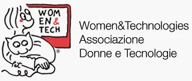

In an era where artificial intelligence meets oncology and digital twins could transform clinical trials, one scientist from Sardinia is contributing to the development of medicine's future.
Alessia Soru's academic path began in a small village in Sardinia, where opportunities for scientific discovery were limited. Today, she works in oncological research, demonstrating how curiosity and determination can lead to meaningful contributions in the fight against cancer.
"Italy is a country that can be valued. We need freshness and new possibilities, but we also have incredible potential.” — Alessia Soru
Like many students, Alessia's initial interest in science came from popular culture representations. Inspired by CSI characters in white lab coats, she pursued her academic studies in industrial biotechnology, initially considering forensic science applications. Her experience during a research scholarship at UC Berkeley proved to be a turning point. While working on projects aimed at blocking tumor growth, she discovered her interest in oncology research.
"I realized I wanted to make a difference and help people.” — Alessia Soru

Leading Young Professionals
Alessia serves as the founding Young Ambassador for Women&Tech® ETS, where she has built a community of over 60 young professionals, predominantly women, working in STEM fields.

The STEAM Approach
Through Women&Tech, Alessia promotes the integration of STEAM (Science, Technology, Engineering, Arts, and Mathematics), recognizing that scientific progress benefits from ethical considerations and human-centered approaches.
Currently working as a research fellow at the University of Bologna, Alessia focuses on metastatic tumors with unknown primary sources. These rare cases have historically presented significant treatment challenges, representing an area of unmet medical need. Her research interests extend to digital transformation in healthcare. Alessia is particularly interested in the potential of "digital twins" in medicine—detailed virtual models of patients that could potentially improve clinical trials.
Virtual and Augmented Reality
Exploring applications in medical training and patient care, from surgical simulations to therapeutic interventions.
Artificial Intelligence
Examining how AI might enhance diagnostic accuracy, optimize treatment planning, and predict patient responses to therapies.
Despite opportunities abroad, Alessia remains committed to contributing to Italy's scientific community. She envisions a future where Italy can retain its talented scientists while providing them with adequate resources and environment to conduct meaningful research. Her participation in events like the Taranto Biotech Days demonstrates her interest in collaborative innovation and her dedication to building connections between academic research, industry, and society.
The Future of Biotech Innovation Starts Here
Alessia Soru's journey from a Sardinian village to oncological research demonstrates that scientific innovation can emerge from diverse geographical and social backgrounds.